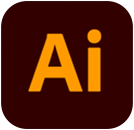
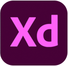
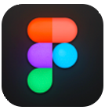

About.
About me.
Hi there! My name is Sophie, as you may already know since you are looking at my portfolio. I was born and raised in a small town in the Netherlands. Currently, I am studying Communication and Multimedia Design at the Amsterdam University of Applied Sciences. In my free time I like to go on citytrips & go out for drinks. But I am also a huge fan of staying in, watching a movie & cuddling with my pet.
Design VS Code.
The design vs code battle is still on. I love creating new concepts, thinking of how the user would want to use a product. But I also love developing that idea. I enjoy playing around with code and getting it to actually work. I think knowledge of each one of them helps me with the other one. But for now my focus is with developing, because I want to learn more about it.
Skill.
- 
- 
- 
-

-

-

-

- Visual Interface Design
- User Experience Design
- Concept development
- Responsive webdesign
- Frontend development
Experience.
-
feb 2022 - jul 2022
Minor: Webdesign- & development
üìç Amsterdam University of Applied Sciences
-
sep 2019 - present
Bachelor: Communication and Multimedia Design
üìç Amsterdam University of Applied Sciences
-
dec 2021
Freelance job UX Design
üìç GITP
-
apr 2021 - jun 2021
Internship UX Design
üìç GITP